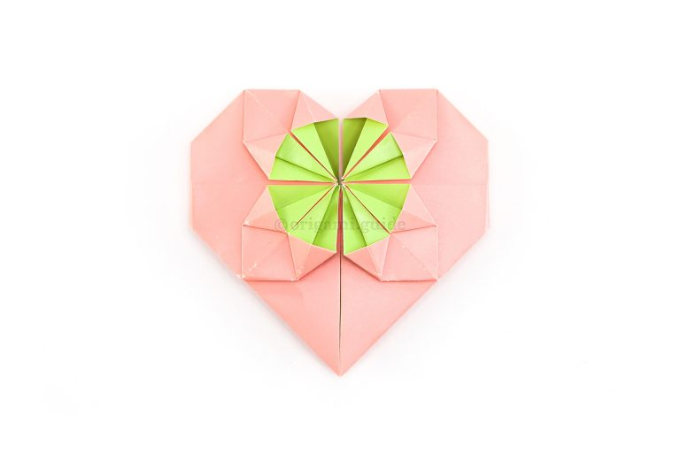

How to make a origami fancy heart?
This pretty origami heart is made from 1 sheet of rectangular paper and is often folded with a dollar bill. These origami hearts have a circular design on the front which can hold a coin or other round object. Paper Size You can use half of a square sheet of paper for this, or use any rectangular size that is at least 2x as long as it is high. The best ratio to use is 1:2. These lovely origami hearts make great greeting card embellishments, especially on Valentine’s Day, birthdays, weddings or anniversaries. Fancy Origami Heart Instructions
STEP 1:
This is the front of our origami paper, the main area of the heart will be this color.
STEP 2:
Fold the bottom edge up to the top edge.
STEP 3:
Fold the bottom edge up to the top edge.
STEP 4:
Fold the bottom edge up to the top edge.
STEP 5:
Cut along the crease you just created, leaving you with a rectangular piece of paper.
STEP 6:
Fold the bottom left corner diagonally up to the top edge.
STEP 7:
Unfold the previous step.
STEP 8:
Fold the top left corner diagonally down to the bottom edge.
STEP 9:
Unfold the previous step.
STEP 10 :
Repeat steps 6 to 9 on the right end of the paper. Note: if you're using a dollar, there will be a gap between the two X's, you want to get rid of this gap by making a pleat fold.
STEP 11:
Flip the paper over to the other side.
STEP 12 :
Fold the left and right edges to the middle, using the central diamond shape as a guide.
STEP 13 :
Unfold the previous step.
STEP 14 :
Flip the paper back over to the other side.
STEP 15 :
We will create two opposing water bomb folds. Bring the right edge inwards whilst squashing the top and bottom folds inside.
STEP 16 :
Bring the left section inwards as well.
STEP 17 :
Completely flatten the paper so that you have a neat diamond shape.
STEP 18 :
Focusing on the right section, fold the top and bottom points diagonally over to the right point.
STEP 19 :
Repeat the previous step on the left section.
STEP 20 :
Open out the top right flap you just created.
STEP 21 :
Flatten this point down into a square shape.
STEP 22 :
Repeat the same process on the other three points.
STEP 23 :
Focusing on the top right quadrant, fold the left and right diagonal edges as shown.
STEP 24 :
Open up the little flaps you just created in the previous step.
STEP 25 :

Flatten them to create this shape, which looks like a quarter of a circle.
STEP 26 :
Repeat the process on the other three quadrants, you can rotate the paper if you find it hard to replicate.
STEP 27 :
Fold the top section down behind. Note: If using a dollar, there will be an overlap at the bottom, just fold the overlap so that you can't see it, you can also slot it inside to secure the heart.
STEP 28 :
Flip the heart over to the other side, from left to right.
STEP 29 :
Fold the left and right points in a little to shape the heart.
STEP 30 :
If you would like your heart to stand upright, you can fold the back flap up a little. Then fold the bottom point under to create a stand.
STEP 31 :
Your heart will stand up on it's own.
Last Step:
The fancy origami heart is complete! If you're adding coin to the middle circle, it will fit under the four "spikes" inside the circle.
